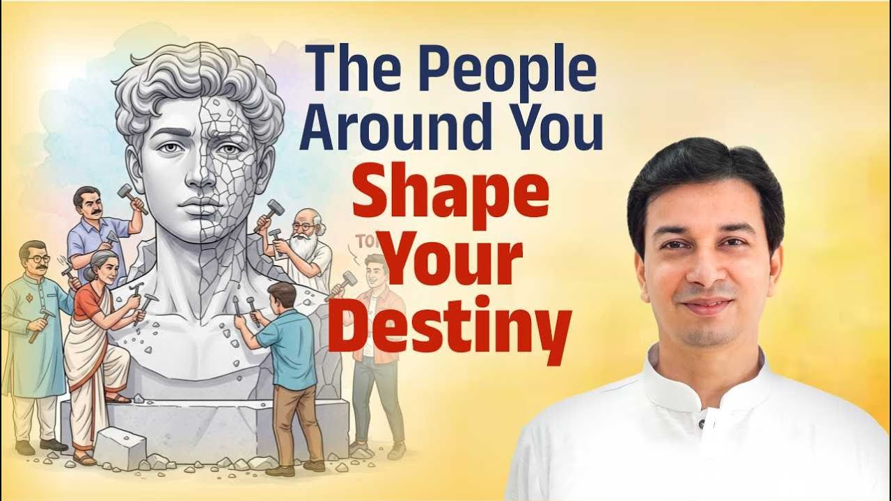

आपकी संगति ही आपका भविष्य गढ़ती हैThe Company You Keep Shapes Your Destiny
“That is how you can maintain सत्त्वगुण. Otherwise you cannot.”“That is how you can maintain sattva guna. Otherwise you cannot.”

क्या मृत्यु के क्षण में मुक्ति संभव है?Is Liberation Possible at the Moment of Death?
“पर मैं निर्गुण को जानता ही नहीं हूं, समझता ही नहीं, तो मेरा ये अक्षर का ओम बोल के फायदा नहीं।”“That which the knowers of the Vedas call imperishable, which ascetics free from attachment enter, and desiring which they practise celibacy, that supreme state I shall declare to you in brief.”

कर्म आपको जलाए उससे पहले आप कर्म को जला दोBurn Your Karma Before It Burns You
“अगर गुस्सा कर ही रहे हो, तो एक्टिंग वाला गुस्सा करो, जिससे बीपी नहीं बढ़ता।”“If you are going to be angry anyway, be angry as an act, so that your BP does not rise.”

धन, धर्म और मुक्ति का प्राचीन रहस्यThe Ancient Secret of Wealth, Dharma and Liberation
“हमें जो सोच दी गई है कि पैसा खराब, अमीर खराब, अमीरी खराब, इससे दिमाग खराब होता है, ऐसा कुछ नहीं होता है।”“The root of happiness is dharma, the root of dharma is wealth (artha), and the root of wealth is the state.”

महाशिवरात्रि पर जानिए शिवलिंग का असली रहस्यThe Real Secret of the Shivalinga This Maha Shivratri
“जो दिख रहा था वह साकार था, और हमारे भीतर जो निराकार भाग है, उसका जो प्रतीक है, उसे शिवलिंग कहते हैं।”“What was visible was the form; and the formless part within us, its symbol is what we call the Shivalinga.”

भीतर की तीन शक्तियों को जगाइएAwaken the Three Powers Within
“कुछ तो पाठ ज़रूर है। जिस दिन यह बात समझ में आने लगती है, तब 'वासुदेव सर्वम् इति' समझ में आने लगता है।”“The forms of Brahman are conceived for the benefit of the seekers.”

दैवी संपत्ति को जगाने की कलाThe Art of Awakening Divine Wealth
“उल्टा दोष लगेगा। कर्म का महत्व दिखाओ, करके दिखाओ, वह चलेगा।”“Non-violence, truthfulness, freedom from anger, renunciation, peace, absence of slander, compassion for all beings, freedom from craving, gentleness, modesty and steadiness.”
इस खोज से कोई अध्याय नहीं मिला।No chapters match this search.